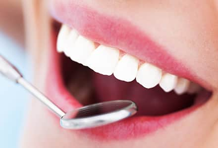
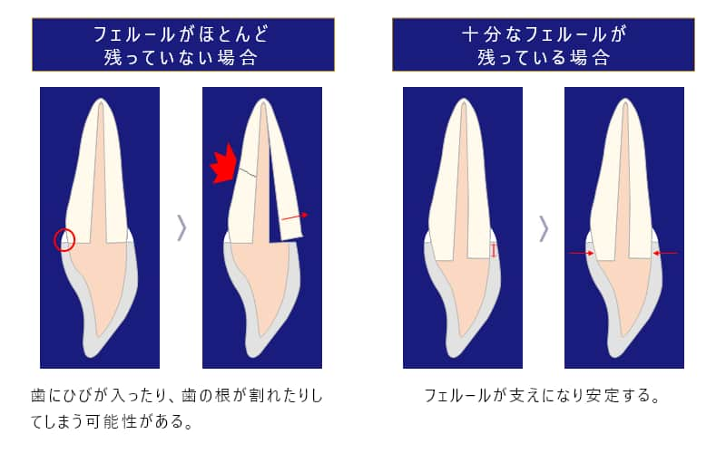
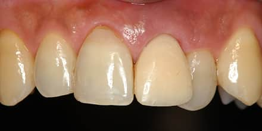
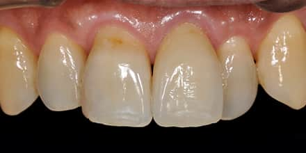
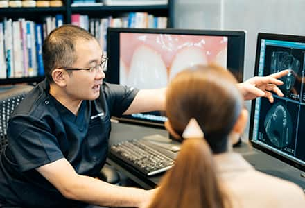
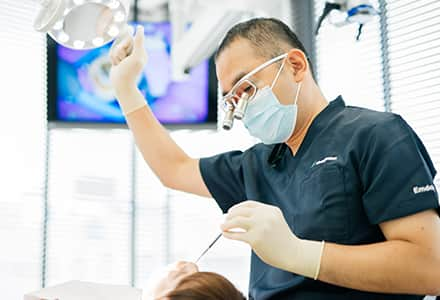
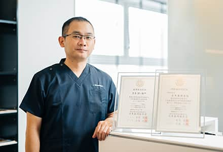

将来を見据えた補綴治療

補綴（ほてつ）治療とは、無くなってしまった歯の代わりに、クラウン（被せ物）や入れ歯などの人工歯をつくり、正常な噛み合せで噛めるように補う治療です。補綴治療を行う際には、土台となる歯肉や歯槽骨などの歯周組織の状態を万全にする必要があります。
藤沢の歯医者、玉木歯科医院では日本歯周病学会専門医・指導医である院長が、補綴治療後も永く歯を保つための歯周形成外科治療をご提供いたします。
補綴治療した歯を永く保つために
歯周病がコントロールされていない状態で、補綴治療であるセラミック治療や入れ歯治療などを行うと、土台である歯肉や歯槽骨の状態が悪いため、精度の高い処置や永続性のある治療が不可能になります。
例えば、フェルール（被せものが自分の歯を覆う部分）がほとんど残っていない場合、噛む力に歯が耐えきれず、歯にひびが入ったり、歯の根が割れたりする歯根破折のリスクが高まり抜歯を余儀なくされます。

また、歯冠長が短い状態（被せる歯に十分な高径が無い状態）で補綴治療を行うと、脱離や二次カリエス（再発）のリスクが高まります。審美修復治療を行う上でも、歯肉ラインを整えることは清掃性・機能性・審美性を獲得する上で非常に重要なことになります。このように、補綴治療を行う際は、歯周組織の環境が万全に整っていることが重要なのです。
治療例
| 治療前 |
|---|
|  |
| 治療後 |
|---|
|  |
| 患者様からの主訴 | 左上1番の被せ物が土台ごと脱離し、それまで通っていた医院では抜歯してインプラントを勧められたが抜歯を避ける方法を探して当院へ来院。 |
|---|---|
| 治療方針 | 左上1番は歯肉縁上の残存歯質（フェルール）がほとんどなくまた周囲との歯肉ラインとの調和もとれていなかったためフェルール確保と歯肉ラインを審美的に整える事を目的として歯周形成外科を行った後、左上1番にはジルコニアクラウンを装着することとした。 |
| 治療期間 | 4ヶ月 |
| 治療費（税込） | 33万円（歯周形成外科とジルコニアクラウンの合計） |
| 治療におけるリスク | 特に無し |
最終的なゴールの明確化が大切

どの治療においても「最終的なゴールはどういう状態か」をしっかり明確化し、ゴールに向け治療計画を立てることが大切です。特に歯周病治療においては、時間がかかる治療な上に患者様のご協力が必要不可欠ですので、明確化したゴールを設定することで目標に向かって一緒に頑張ることが重要です。
まずは歯周組織の環境を整備した後、補綴処置を行います。補綴処置を行う前に土台となる歯肉の状態を整えておかなければ、正確な型採りができず、適合の良い被せ物を製作することができません。永続性のある治療のためには、歯周組織の整備（歯周形成外科）が重要になってくるのです。
歯周病治療における重要なポイント

玉木歯科医院の院長は、日本でも数少ない「日本歯周病学会指導医」として認定されていますが、補綴治療にも精通しており、各学会で審美修復治療の発表を多数行い、高い評価を得ています。日本歯周病学会指導医だからこそ、1本の歯単位での治療を行うのではなく、口腔内全体を診て歯周病のリスクや進行状況、二次う蝕、歯肉退縮などを考慮した治療が可能です。日本歯周病学会指導医としての高い技術と豊富な経験・知識を活かせるからこそ、院長玉木が行う審美修復治療が高い評価を得られているのです。

玉木歯科医院では、口腔内全体の状態を診て、患者様に合った最適な治療方法をご提供します。補綴治療の際にも、まず歯肉ラインの改善やフェルールの確保などの歯周組織環境を改善することで、被せ物が長持ちし、噛み合わせも悪くならない治療を行っております。
審美修復治療に関する学会発表
【2017年6月】
歯冠長延長術とプレスセラミックスを用いて審美的改善を行った一症例 . 日本顎咬合学会第35回学術大会
【2018年6月】
美しい口腔内規格写真を撮影するために知るべき傾向と対策 . 日本顎咬合学会第36回学術大会
【2018年9月】
オールセラミックスクラウンと歯肉弁根尖側移動術を用いて審美的改善を図った一症例 . 日本歯科審美学会第29回学術大会
【2019年11月】
歯周炎患者の欠損補綴にインプラント治療を用いて包括的診療を行った一症例 . 日本歯科審美学会第30回学術大会
前歯部インプラントにロール法を用いて低侵襲に審美的改善を図った一症例 . 日本歯科審美学会第30回学術大会